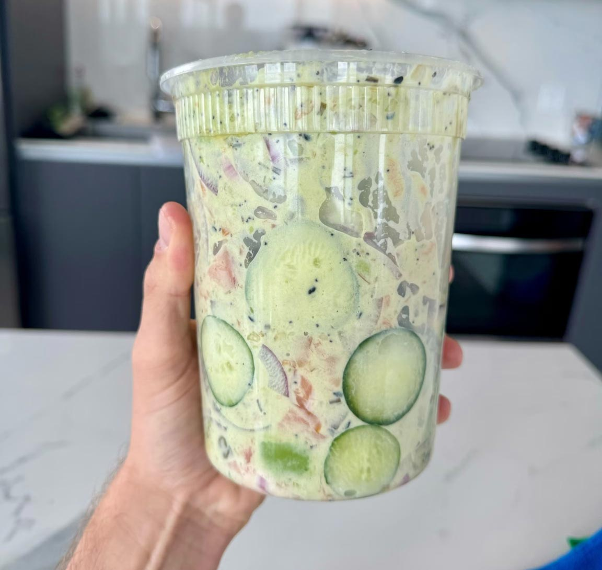

Everything Cucumbers
The viral cucumber snack that’s super versatile, but this one is my favorite. Quick and refreshing!

Image by: Logan Moffitt
Ingredients:
- 1 cucumber
- Cream cheese
- Smoked or cooked salmon, or tuna (canned tuna works!)
- Everything bagel seasoning and/or furikake seasoning
- Salt & pepper
- Optional:
- Red onions
- Imitation crab
- Capers
- Shrimp
- Avocado
- MSG
Ingredients:
- Slice your cucumbers into about half-inch slices (or thinner if you prefer it that way!)
- If you’re using red onions, half-slice those.
- Cook and lightly season your salmon with salt and pepper and chop (skip the cooking part if you are using smoked salmon/prefer raw salmon!)
- Cut the imitation crab into small pieces.
- Cook the shrimp and cut into small pieces
- Peel and dice your avocado.
- In a medium/large container (with a lid), put in all of your food ingredients.
- Add about a table spoon scoop of cream cheese into the container.
- Add in any additional ingredients (red onions, capers, etc.)
- Generously season with your seasonings of choice.
- Put on the lid and shake until everything is evenly mixed.
- Open and enjoy!
Table of Contents
Recipes